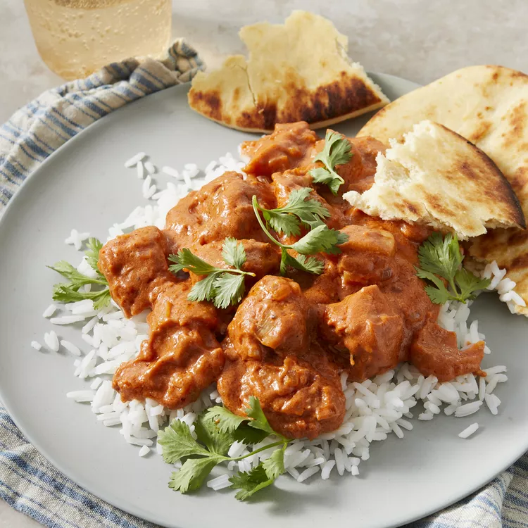

Chicken Makhani (Indian Butter Chicken)

This butter chicken recipe, or chicken makhani, is one of my favorite Indian dishes. It features a full-flavored sauce that complements the chicken well. It can be made as mild or spicy as you wish by adjusting the cayenne. Serve with basmati rice and naan bread.